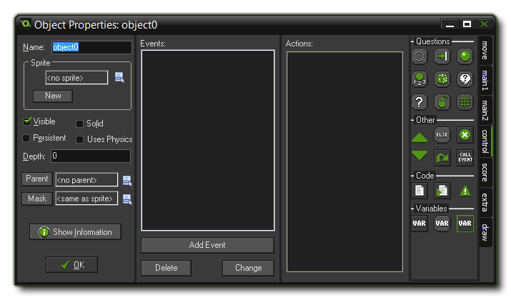
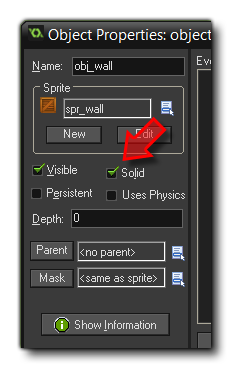

Tutorial
Page 6 of 15
Adding Objects
So how does this all this come together for the game we are making? To start with, we will need two objects. Let's first create the very simple wall object, as this object needs no behaviour at all since it will
not react to any events in the game world.
To create the wall object you must follow these steps:
- From the drop down Resources menu in the main GameMaker window choose Create Object. The Object Properties form appears, as is shown below:

- Click on the Name field and rename the object to "obj_wall".
- Click on the Menu icon at the end of the Sprite field and in the list of available sprites select the "spr_wall" sprite.
- Instances of the wall object must be "flagged" as solid, that is, no other instances should be allowed to penetrate them. To this end click on the box next to the Solid property to enable it.

- Press OK to close the form.
For the clown object we start in the same way:
- From the Resources menu, choose Create Object.
- Click on the Name field and rename the object to "obj_clown".
- Click on the icon at the end of the Sprite field and select the "spr_clown" sprite.
Note that we do not make the clown object solid! Moving instances should never be flagged as solid in their object properties as that can cause some serious issues with collisions, so reserve this option for
wall objects, platform objects and other things that shouldn't move around the room when added as instances. Now, for the clown there is a lot more that needs to be done as we have to specify its behaviour, which
we will do on the next page...
© Copyright YoYo Games Ltd. 2015 All Rights Reserved